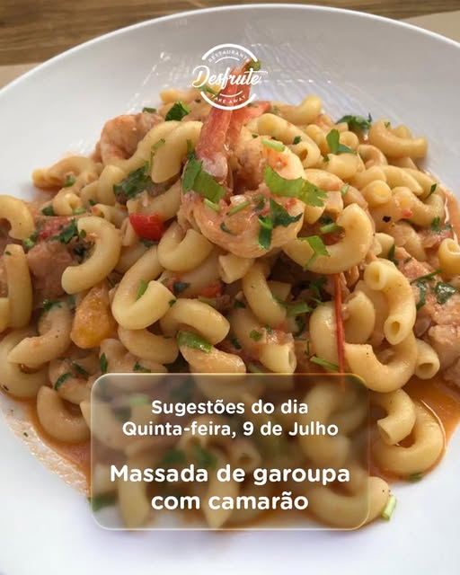
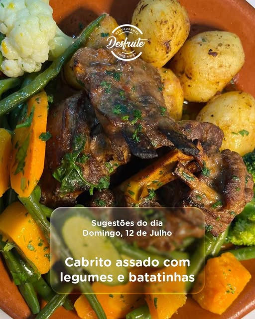

Sugestão publicada
Massada de garoupa com camarão
Uma combinação reconfortante de peixe, camarão, massa e molho rico em sabor.
Conteúdo baseado em informação pública · preços e disponibilidade sujeitos a confirmação
Maputo · Marisco · Churrasco · Petiscos
Sabores generosos, sugestões frescas e um ambiente acolhedor no coração da cidade.
À mesa, sem pressa
O Desfrute combina cozinha portuguesa, marisco, churrasco e petiscos num espaço pensado para almoços tranquilos, jantares em família e bons momentos entre amigos.
Conhecido publicamente pelas porções generosas e pelo atendimento acolhedor, o restaurante serve almoço, jantar e bebidas, com opções para comer no espaço, levar ou receber em casa.

O lugar perfeito para conviver e saborear uma refeição maravilhosa.
Desfrute · Restaurante & TakeawayDa cozinha para a mesa
Fotografias provenientes de publicações públicas do perfil @desfrute.moz.
A sua mesa espera por si
Preencha os dados para preparar uma mensagem. A confirmação final é feita directamente com a equipa do Desfrute.
Visite o Desfrute